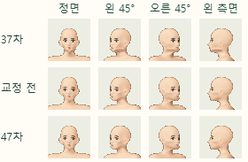
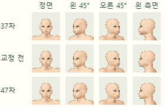
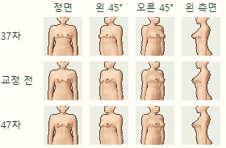

같은 구도에서 돌려보기
원본 구도를 누르면 양쪽 모델이 함께 돌아갑니다. 왼쪽 대조 원형에서 37차를 고르면 같은 자세와 조명에서 47차 후보와 비교할 수 있습니다. 출발·교정의 작은 그림은 실제 표시 크기 48px입니다. 페른은 보류 원화까지 검토 중이고 힘멜과 W의 기존 기본형은 각각 39차와 40차입니다.
실제 48px로 본 교정 전후



같은 원본에서 잰 거리
측정 자료를 읽고 있습니다.
페른 턱 확대와 원화 대조 · 힘멜 턱 확대와 원화 대조 · 몸통 지정 도판 세 칸의 원본과 추적선 · 양팔 자세와 보류 시점